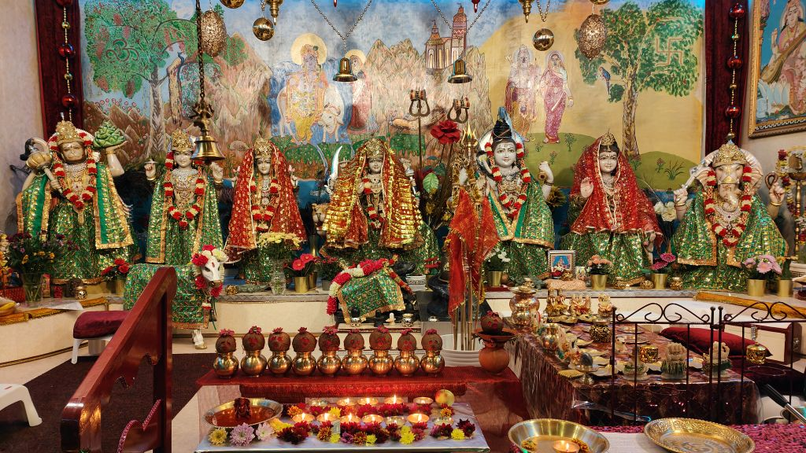

Raam Raam
Help us build our digital mandir
Onze mandir is elke zondag een thuis voor iedereen. Wij willen dat thuis ook online bouwen: een plek waar de gemeenschap elkaar vindt, waar kennis over Sanatan Dharma wordt gedeeld en waar jong en oud bij de mandir betrokken blijven.
De nieuwe website is de eerste stap. Met uw gift bouwen we verder.
Every Sunday our mandir is a home for everyone. We want to build that home online too: a place where the community finds each other, where knowledge of Sanatan Dharma is shared, and where young and old stay close to the mandir.
The new website is the first step. With your gift we build on.
What is already there
What we want to build
Berichten vóór elke hoogtijdag, een plek voor vrijwilligers en de verhalen van onze ouderen.
A community: a message before each festival, a place for volunteers, and the stories of our elders.
Mantra’s en aarti’s om te beluisteren, lessen voor kinderen en uitleg bij elke hoogtijdag.
Sharing knowledge: mantras and aartis to listen to, lessons for children, and each festival explained.
Regelmatig beeld en verhaal op YouTube en Instagram, zodat ook wie ons nog niet kent de mandir vindt.
Campaigns and social media: regular pictures and stories on YouTube and Instagram, so those who do not know us yet can find the mandir.
Opnamen van diensten en hoogtijdagen, met toestemming van wie in beeld is.
Our own video and photography: recordings of services and festivals, with the consent of everyone pictured.
Een afspraak met de pandit, online doneren en puja-artikelen bestellen.
Arranging things online: an appointment with the pandit, giving online, and ordering items for puja.
Hosting, beveiliging en iemand die de website elke week actueel houdt.
Upkeep: hosting, security, and someone who keeps the website current every week.
How to give
Elk bedrag helpt. U kunt ook in de mandir geven; vraag het een van de vrijwilligers.
Every amount helps. You can also give at the mandir; ask one of the volunteers.